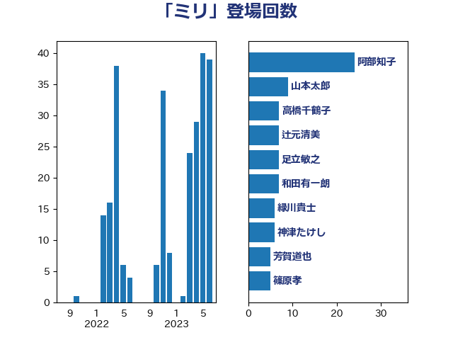

単語「ミリ」

| 西田昌司 | 自由民主党 | 15 回 |
| 阿部知子 | 立憲民主党 | 14 回 |
| 足立敏之 | 自由民主党 | 9 回 |
| 大串博志 | 立憲民主党 | 8 回 |
| 石橋通宏 | 立憲民主党 | 7 回 |
| 緑川貴士 | 立憲民主党 | 7 回 |
| 芳賀道也 | 国民民主党 | 7 回 |
| 和田有一朗 | 日本維新の会 | 6 回 |
| 熊谷裕人 | 立憲民主党 | 5 回 |
| 徳永エリ | 立憲民主党 | 4 回 |
| 柳ヶ瀬裕文 | 日本維新の会 | 4 回 |
| 仁木博文 | 無所属 | 3 回 |
| 佐藤啓 | 自由民主党 | 3 回 |
| 吉田統彦 | 立憲民主党 | 3 回 |
| 大島敦 | 立憲民主党 | 3 回 |
| 寺田静 | 無所属 | 3 回 |
| 福田昭夫 | 立憲民主党 | 3 回 |
| 紙智子 | 日本共産党 | 3 回 |
| 和田義明 | 自由民主党 | 2 回 |
| 国定勇人 | 自由民主党 | 2 回 |
| 小田原潔 | 自由民主党 | 2 回 |
| 尾崎正直 | 自由民主党 | 2 回 |
| 山田太郎 | 自由民主党 | 2 回 |
| 川合孝典 | 国民民主党 | 2 回 |
| 柿沢未途 | 無所属 | 2 回 |
| 藤丸敏 | 自由民主党 | 2 回 |
| 高橋千鶴子 | 日本共産党 | 2 回 |
| 中野英幸 | 自由民主党 | 1 回 |
| 井上哲士 | 日本共産党 | 1 回 |
| 伴野豊 | 立憲民主党 | 1 回 |
| 勝部賢志 | 立憲民主党 | 1 回 |
| 堤かなめ | 立憲民主党 | 1 回 |
| 小林鷹之 | 自由民主党 | 1 回 |
| 小西洋之 | 立憲民主党 | 1 回 |
| 山下芳生 | 日本共産党 | 1 回 |
| 山崎誠 | 立憲民主党 | 1 回 |
| 山本剛正 | 日本維新の会 | 1 回 |
| 岡本三成 | 公明党 | 1 回 |
| 平口洋 | 自由民主党 | 1 回 |
| 平沢勝栄 | 自由民主党 | 1 回 |
| 後藤祐一 | 立憲民主党 | 1 回 |
| 後藤茂之 | 自由民主党 | 1 回 |
| 徳永久志 | 立憲民主党 | 1 回 |
| 日下正喜 | 公明党 | 1 回 |
| 杉久武 | 公明党 | 1 回 |
| 杉本和巳 | 日本維新の会 | 1 回 |
| 榛葉賀津也 | 国民民主党 | 1 回 |
| 武田良太 | 自由民主党 | 1 回 |
| 片山さつき | 自由民主党 | 1 回 |
| 牧山ひろえ | 立憲民主党 | 1 回 |
| 玄葉光一郎 | 立憲民主党 | 1 回 |
| 福島伸享 | 無所属 | 1 回 |
| 空本誠喜 | 日本維新の会 | 1 回 |
| 篠原豪 | 立憲民主党 | 1 回 |
| 舩後靖彦 | れいわ新選組 | 1 回 |
| 西銘恒三郎 | 自由民主党 | 1 回 |
| 赤羽一嘉 | 公明党 | 1 回 |
| 金子恭之 | 自由民主党 | 1 回 |
| 鎌田さゆり | 立憲民主党 | 1 回 |
| 馬場伸幸 | 日本維新の会 | 1 回 |